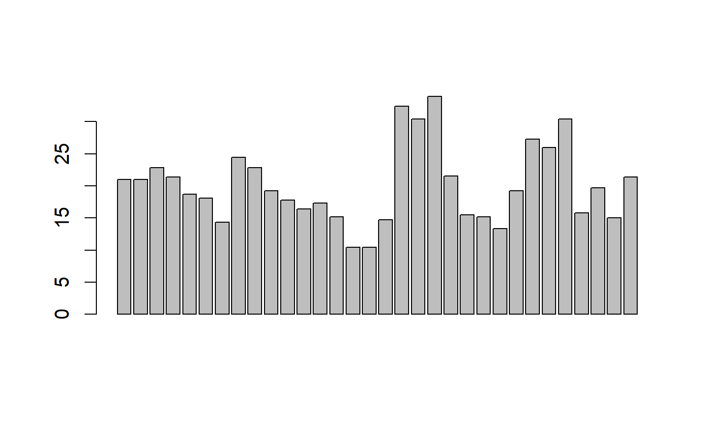
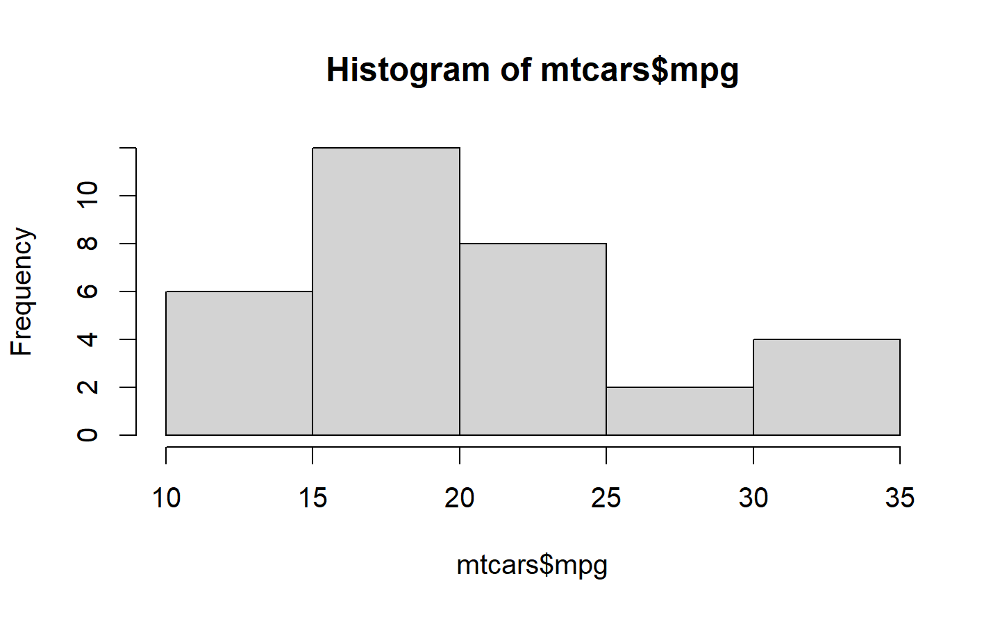
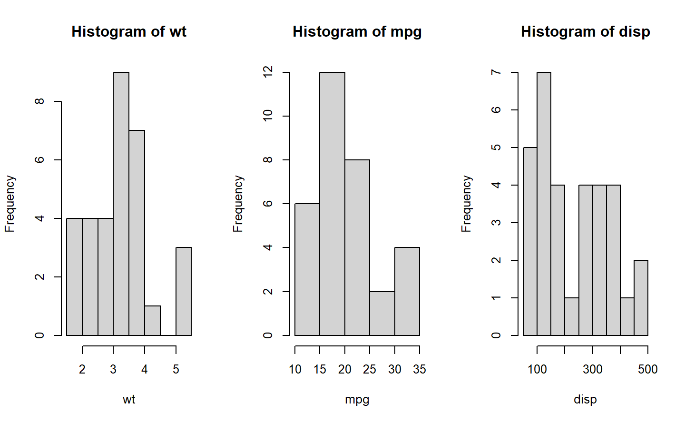

Chapter 11 基本繪圖
11.1 reference
一般視窗作業系統的繪圖，會有一個抽象物件device在這個device上，有一個抽象物件canvas，和繪圖工具例如，水彩筆之類的抽象物件可以指定顏色，線條粗細等等。
11.2 basic
Creating a Graph In R, graphs are typically created interactively.
11.2.1 Creating a Graph
attach(mtcars)
plot(wt, mpg)
abline(lm(mpg~wt))
title("Regression of MPG on Weight")
plot()函數，新建視窗然後畫出 weight vs. miles per gallon.
abline() 不會開啟新視窗做圖，abline()的語法如下:
abline(a = NULL, b = NULL, h = NULL, v = NULL, reg = NULL,coef = NULL, untf = FALSE, …)
代表的意思是畫出一條直線a+bx ，其中a代表截距常數，b則是斜率常數。例如
Y=2X+1，則對應的函數為 abline(a=1,b=2) 。
11.2.2 Saving Graphs
可以利用menu存檔，例如File -> Save As. 也可以利用函數：
| Function | Output to |
|---|---|
| pdf(“mygraph.pdf”) | pdf file |
| win.metafile(“mygraph.wmf”) | windows metafile |
| png(“mygraph.png”) | png file |
| jpeg(“mygraph.jpg”) | jpeg file |
| bmp(“mygraph.bmp”) | bmp file |
| postscript(“mygraph.ps”) | postscript file |
11.3 多個圖和疊圖
傻瓜指令例如 (plot, hist, boxplot, etc.) 基本上會產生新的圖。要避免這個情況，可以分為多圖和疊圖討論。開啟新視窗的方法根據OS而不同 。
| Function | Platform |
|---|---|
| windows() | Windows |
| X11() | Unix |
| quartz() | Mac |
要關閉視窗，可以用函數dev.off()
如果要知道目前的視窗是那一個，可以參考 dev.cur()。 Note: 如果目前有多個圖窗，則一直呼叫這個函數dev.off()，會依次關閉視窗，直到函數傳回NULL。
驗證上面的說法可以利用
hist(mtcars$mpg)
dev.cur()png
2
hist(mtcars$mpg)
dev.cur()png
2
 上面的範例，可以看到圖裝置的編號都是2，而且最後只有一個圖。
上面的範例，可以看到圖裝置的編號都是2，而且最後只有一個圖。
hist(mtcars$mpg)
dev.cur()png
2
hist(mtcars$mpg)
dev.cur()png
2
dev.off()null device
1

討論下面的輸出結果，我只看到一個視窗：
X11()
hist(mtcars$mpg)
dev.cur()
X11()
hist(mtcars$mpg)
dev.cur()11.4 Histograms and Density Plots
11.4.1 Histograms
函數hist(x)：其中
x是一個數字向量， 選項freq=FALSE 則是畫出 probability densities 而不是次數 frequencies.
選項：breaks= ## 則是控制分成幾份。
Simple Histogram
hist(mtcars$mpg)
分成12份，顏色紅色。
hist(mtcars$mpg, breaks=12, col="red")
11.4.1.1 Add a Normal Curve
x <- mtcars$mpg
h<-hist(x, breaks=10, col="red", xlab="Miles Per Gallon",
main="Histogram with Normal Curve")
xfit<-seq(min(x),max(x),length=40)
yfit<-dnorm(xfit,mean=mean(x),sd=sd(x))
yfit <- yfit*diff(h$mids[1:2])*length(x)
lines(xfit, yfit, col="blue", lwd=2) hint: 因為\(pdf=\frac{\frac{n}{N}}{bin \quad width}\) 所以\(n=pdf\times N \times (bin \quad width)\)
Histograms can be a poor method for determining the shape of a distribution because it is so strongly affected by the number of bins used.
h$breaks
[1] 10 12 14 16 18 20 22 24 26 28 30 32 34
$counts
[1] 2 1 7 3 5 5 2 2 1 0 2 2
$density
[1] 0.0312 0.0156 0.1094 0.0469 0.0781 0.0781 0.0312 0.0312 0.0156 0.0000
[11] 0.0312 0.0312
$mids
[1] 11 13 15 17 19 21 23 25 27 29 31 33
$xname
[1] "x"
$equidist
[1] TRUE
attr(,"class")
[1] "histogram"
To practice making a density plot with the hist() function, try this exercise.
11.4.2 Kernel Density Plot
Kernal density plots are usually a much more effective way to view the distribution of a variable. Create the plot using plot(density(x)) where x is a numeric vector.
d <- density(mtcars$mpg) # returns the density data
plot(d) # plots the results
11.4.2.1 Filled Density Plot
d <- density(mtcars$mpg)
plot(d, main="Kernel Density of Miles Per Gallon")
polygon(d, col="red", border="blue")
11.4.3 Comparing Groups VIA Kernal Density
The sm.density.compare( ) function in the sm package allows you to superimpose the kernal density plots of two or more groups. The format is sm.density.compare(x, factor) where x is a numeric vector and factor is the grouping variable.
11.4.3.1 Compare MPG distributions for cars with 4,6, or 8 cylinders
library(sm)
attach(mtcars)
#create value labels
cyl.f <- factor(cyl, levels= c(4,6,8),
labels = c("4 cylinder", "6 cylinder", "8 cylinder"))
#plot densities
sm.density.compare(mpg, cyl, xlab="Miles Per Gallon")
title(main="MPG Distribution by Car Cylinders")
#add legend via mouse click
colfill<-c(2:(2+length(levels(cyl.f))))
legend(locator(1), levels(cyl.f), fill=colfill)11.5 合併 Plots
同時顯示多個plot的結果，可以利用函數par() or layout( )。
函數par( )的選項有： mfrow=c(nrows, ncols) 填plot的方向為橫行。
mfcol=c(nrows, ncols) 填入的方向為直行。
#4 2 x 2 figures
attach(mtcars)
par(mfrow=c(2,2))
plot(wt,mpg, main="Scatterplot of wt vs. mpg")
plot(wt,disp, main="Scatterplot of wt vs disp")
hist(wt, main="Histogram of wt")
boxplot(wt, main="Boxplot of wt")
2 x2 layout click to view
# 3 figures arranged in 3 rows and 1 column
attach(mtcars)The following objects are masked from mtcars (pos = 3):
am, carb, cyl, disp, drat, gear, hp, mpg, qsec, vs, wtpar(mfrow=c(3,1))
hist(wt)
hist(mpg)
hist(disp)
#dev.off()
3 x 1 layout
函數 layout( ) 的使用方法為 layout(mat) 其中 mat 的元素用來指定圖形號碼。例如分成4個格子,順序為左右上下(byrow=TRUE) 1在第一ROW,占用[1,1]-[1,2],2,3,分別占用[2,1]和[2,2]
# One figure in row 1 and two figures in row 2
attach(mtcars)The following objects are masked from mtcars (pos = 3):
am, carb, cyl, disp, drat, gear, hp, mpg, qsec, vs, wtThe following objects are masked from mtcars (pos = 4):
am, carb, cyl, disp, drat, gear, hp, mpg, qsec, vs, wtlayout(matrix(c(1,1,2,3), 2, 2, byrow = TRUE))
hist(wt)
hist(mpg)
hist(disp)
dev.off()null device
1

Optionally, you can include widths= and heights= options in the layout( ) function to control the size of each figure more precisely. These options have the form widths= a vector of values for the widths of columns heights= a vector of values for the heights of rows.
Relative widths are specified with numeric values. Absolute widths (in centimetres) are specified with the lcm() function.
::: sidebar note: par(mar) 列出margin
par(mar=c(1,1,1,1)) 更動margin
plot.new()常發生的錯誤 : figure margins too large
有兩個原因：1 是畫布過小 2，當前畫布的上下左右距離過大 這裡看看如何解第二個發生原因
默認的畫布上邊款的距離為： 預設為 c(5, 4, 4, 2) + 0.1. 對應 c(bottom, left, top, right)，也就是順時針，由下到右結束一圈。
我們可以將其設置為0，同時將目前的設定紀錄，後面程式的第一行
op <- par(mar = rep(0, 4)) # op 會紀錄之前的margin = 5.1 4.1 4.1 2.1
plot.new() # 畫圖
par(op) # 改回原先的margin :::
par(mar = rep(2, 4))
# One figure in row 1 and two figures in row 2
# row 1 is 1/3 the height of row 2
# column 2 is 1/4 the width of the column 1
attach(mtcars)The following objects are masked from mtcars (pos = 3):
am, carb, cyl, disp, drat, gear, hp, mpg, qsec, vs, wtThe following objects are masked from mtcars (pos = 4):
am, carb, cyl, disp, drat, gear, hp, mpg, qsec, vs, wtThe following objects are masked from mtcars (pos = 5):
am, carb, cyl, disp, drat, gear, hp, mpg, qsec, vs, wtlayout(matrix(c(1,1,2,3), 2, 2, byrow = TRUE),
widths=c(3,1), heights=c(1,2))
hist(wt)
hist(mpg)
hist(disp)
multiplot layout with fine control click to view
See help(layout) for more details.
Creating a figure arrangement with fine control In the following example, two box plots are added to scatterplot to create an enhanced graph.
par(mar = rep(2, 4))
# Add boxplots to a scatterplot
par(fig=c(0,0.8,0,0.8), new=TRUE)Warning in par(fig = c(0, 0.8, 0, 0.8), new = TRUE): 呼叫 par(new=TRUE) 而
不繪圖
plot(mtcars$wt, mtcars$mpg, xlab="Car Weight",
ylab="Miles Per Gallon")
par(fig=c(0,0.8,0.55,1), new=TRUE)
boxplot(mtcars$wt, horizontal=TRUE, axes=FALSE)
par(fig=c(0.65,1,0,0.8),new=TRUE)
boxplot(mtcars$mpg, axes=FALSE)
mtext("Enhanced Scatterplot", side=3, outer=TRUE, line=-3)
To understand this graph, think of the full graph area as going from (0,0) in the lower left corner to (1,1) in the upper right corner. The format of the fig= parameter is a numerical vector of the form c(x1, x2, y1, y2). The first fig= sets up the scatterplot going from 0 to 0.8 on the x axis and 0 to 0.8 on the y axis. The top boxplot goes from 0 to 0.8 on the x axis and 0.55 to 1 on the y axis. I chose 0.55 rather than 0.8 so that the top figure will be pulled closer to the scatter plot. The right hand boxplot goes from 0.65 to 1 on the x axis and 0 to 0.8 on the y axis. Again, I chose a value to pull the right hand boxplot closer to the scatterplot. You have to experiment to get it just right.
fig= starts a new plot, so to add to an existing plot use new=TRUE.
You can use this to combine several plots in any arrangement into one graph.